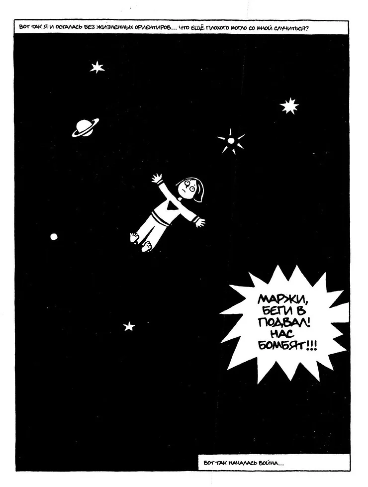
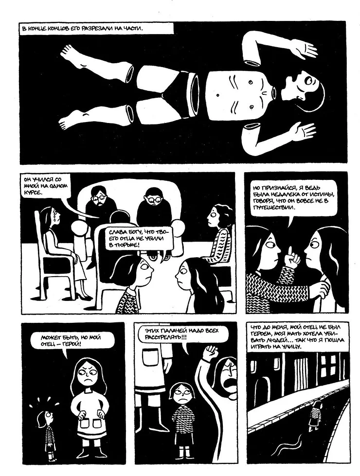
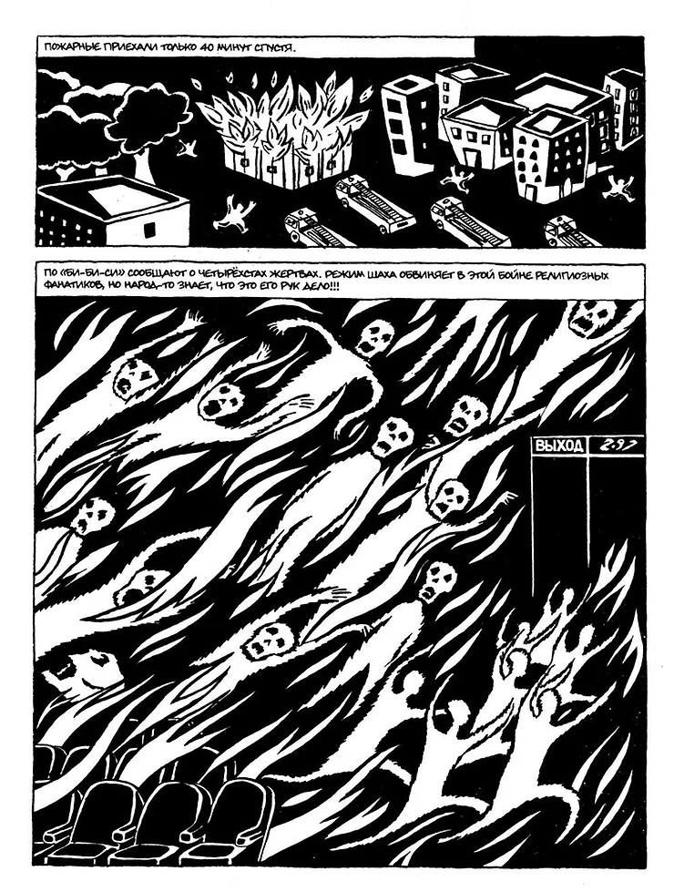
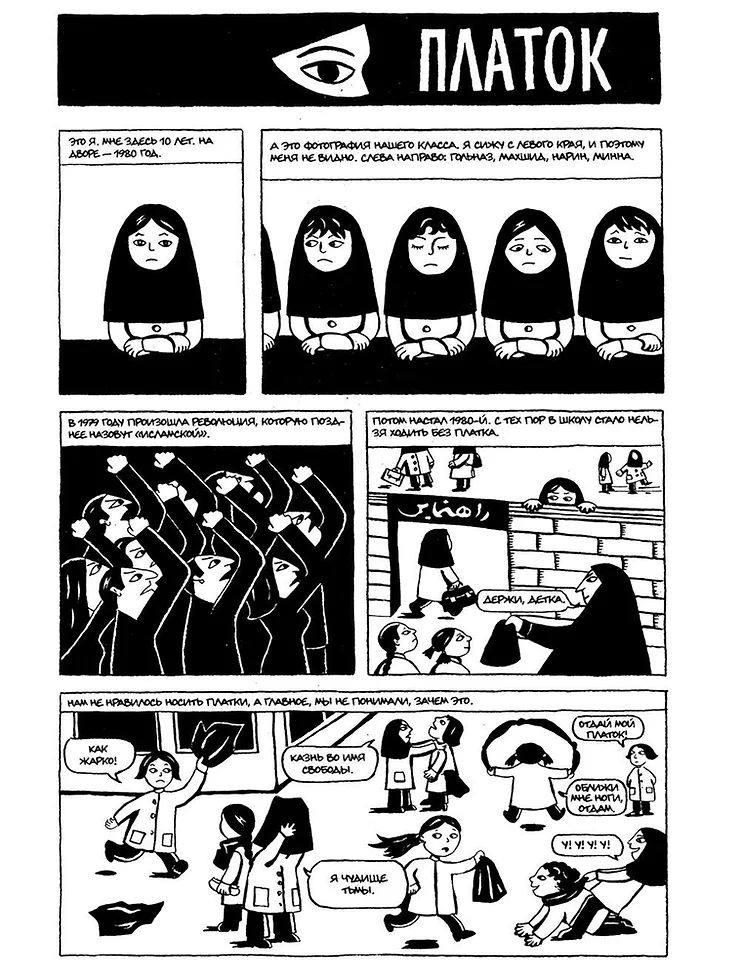

Поиск всякого добрецкого добра в современной инди анимации
"Персеполис" - это комикс и анимационный фильм, созданные Маржан Сатрапи, иранской авторкой и художницей. Он рассказывает историю жизни самой Сатрапи, начиная с ее детства в Иране во время Исламской революции, и до ее взросления и эмиграции в Европу.
Комикс и фильм "Персеполис" представляют собой автобиографическое повествование, которое сочетает в себе элементы мемуаров, политической сатиры и личного путешествия. Они исследуют темы идентичности, свободы, политических изменений и культурного различия.
"Персеполис" получил широкое признание и международное признание за свою оригинальность, смелость и глубокое освещение сложных тем. Он был номинирован на несколько престижных кинонаград, включая Оскар и Каннский кинофестиваль, и получил множество наград в разных категориях.
Название "Персеполис" происходит от древнего города Персеполис, который был столицей Персидской империи в Древней Персии. Это название символизирует связь с иранской историей и культурой, которая играет важную роль в повествовании комикса и фильма.




Комикс
1200 руб
Комикс
в корзине
Автор: Маржан Сатрапи
Перевод с французского Анны Зайцевой
В «Персеполисе есть всё то, чего мы обычно не ждём от комикса: хроника драматических событий, роман воспитания, интимный дневник. Прекрасная книга.
Антон Долин, главный редактор журнала «Искусство кино»